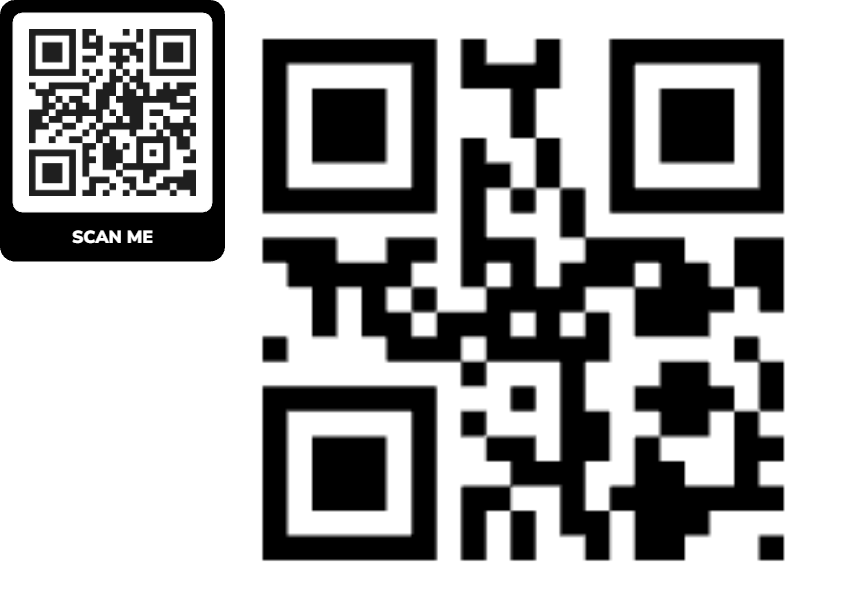

This is the supplied image, unchanged. Display it on a second screen or print it.

Open lecturer’s original Assemblr camera experience
The original project is controlled by its owner. If Assemblr reports an error, retry later; this page does not replace the project or change its model.